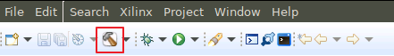
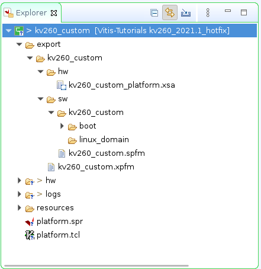

2021.1 Vitis™ プラットフォーム作成チュートリアルxilinx.com の Vitis™ 開発環境を参照 |
手順 3: Vitis プラットフォームの作成¶
プラットフォーム パッケージ用のファイルの準備¶
Vitis プラットフォームの作成フローに必要なすべてのファイルを保存します。
kv260_custom_pkgという名前を付けます。そして、その中にプラットフォーム作成ソース コンポーネントを格納するpfmフォルダーを作成します。mkdir kv260_custom_pkg cd kv260_custom_pkg mkdir pfmこの手順の後、ディレクトリ階層は次のようになります。
- kv260_custom_platform # Vivado Project Directory - kv260_custom_plnx # PetaLinux Project Directory - kv260_custom_pkg # Platform Packaging Directory - pfm # Platform Packaging Sources
sysroot をインストールします。
<PetaLinux Project>/images/linuxディレクトリに移動します。./sdk.sh -d <Install Target Dir>と入力して PetaLinux SDK をインストールします。-dオプションを使用して、出力ディレクトリ kv260_custom_pkg (この例の場合) への完全パス名を指定します。注記: このコマンドを実行する際、環境変数 LD_LIBRARY_PATH は設定しないでください。
pfm ディレクトリ内に
bootディレクトリとsd_dirディレクトリを作成します。cd kv260_custom_pkg/pfm mkdir boot mkdir sd_dirこの手順の後、ディレクトリ階層は次のようになります。
- kv260_custom_platform # Vivado Project Directory - kv260_custom_plnx # PetaLinux Project Directory - kv260_custom_pkg # Platform Packaging Directory - sysroots # Extracted Sysroot Directory - pfm # Platform Packaging Sources - boot # Platform boot components - sd_dir # Files to be put in FAT32 partition of SD card
Vitis プラットフォームを作成するときは、ブート コンポーネントにはブート ディレクトリを、SD カードの FAT32 パーティションの内容には sd_dir を指定します。
ブート コンポーネントを準備します。
生成された Linux ソフトウェア ブート コンポーネントを <yo_petalinux_dir>/images/linux ディレクトリから <full_pathname_to_kv260_custom_pkg>/pfm/boot ディレクトリにコピーして、Vitis プラットフォームのパッケージ フローを実行する準備をします。
zynqmp_fsbl.elf: MPSoC 第 1 段階ブートローダー
pmufw.elf: MPSoC PMU ファームウェア
bl31.elf: MPSoC Arm トラステッド ファームウェア
u-boot-dtb.elf: ELF ファイルにデバイス ツリーを含む U-Boot。u-boot.elf に名前を変更してください。
system.dtb: Linux 用のデバイス ツリー
注記: これらのファイルは、BOOT.BIN を作成するソースです。Vitis のワークフローには必要ですが、KV260 スターター キットのブート コンポーネントは QSPI Flash に固定されているため、このフローではこれらのファイルは使用されません。
sd_dir ディレクトリを準備します。
このディレクトリの内容は、v++ パッケージ ツールにより sd_card.img の FAT32 パーティションにパッケージされます。通常、このディレクトリに boot.scr と system.dtb を保存します。KV260 ワークフローは SD カードをプログラムしないので、このディレクトリにコンテンツを追加するのは省略できます。空白のままにしてください。
Vitis プラットフォームの作成¶
まず、手順 1 で Vivado により生成された XSA ファイルを使用して、Vitis プラットフォーム プロジェクトを作成します。
Vitis IDE を起動します。
作成した kv260_custom_pkg フォルダーに移動します。
cd<full_pathname_to_kv260_custom_pkg>コンソールに
vitis &と入力して Vitis を起動します。ワークスペース ディレクトリとして kv260_custom_pkg フォルダーを選択します。
新しいプラットフォーム プロジェクトを作成します。
[File] → [New] → [Platform Project] をクリックし、プラットフォーム プロジェクトを作成します。
プロジェクト名を入力します。この例の場合、「
kv260_custom」と入力します。[Next] をクリックします。[Platform] ページで次を実行します。
[Browse] ボタンをクリックし、Vivado で生成された XSA ファイルを選択します。この例では
kv260_custom_platform.xsaです。オペレーティング システムを [linux] に設定します。
プロセッサを [psu_cortexa53] に設定します。
アーキテクチャを [64-bit] に設定します。
[Generate boot components]: オフ。ここでは、PetaLinux で生成されたブートコンポーネントを使用します。
[Finish] をクリックします。
[Platform Settings] ビューでソフトウェア設定を指定します。
[linux on psu_cortexa53] ドメインを選択し、[Browse] ボタンを使用して次のようにファイルおよびディレクトリを選択します。
[Bif file]: ドロップダウン アイコンをクリックして、[Generate BIF] を選択します。
注記:
<>内のファイル名はプレースホルダーです。Vitis は、プラットフォームをパッケージするときに、プレースホルダーをプラットフォームへの相対パスに置き換えます。最終的なアプリケーションのビルド時に実行される v++ パッケージャーは、イメージをパッケージするときに、この相対パスを完全パスに展開します。ファイル名プレースホルダーは、boot コンポーネント ディレクトリ内のファイルを指定します。boot ディレクトリ内のファイル名は、BIF ファイル内のプレースホルダーと同じである必要があります。<bitstream>は、予約済みのキーワードです。v++ パッケージャーは、これを最終的なシステム BIT ファイルに置き換えます。[Boot Components Directory]: kv260_custom_pkg/pfm/boot を選択し、[OK] をクリックします。
[FAT32 Partition Directory]: kv260_custom_pkg/pfm/sd_dir を選択し、[OK] をクリックします。
Vivado の [Explorer] ビューで kv260_custom プロジェクトを選択し、[Build] ボタンをクリックしてプラットフォームを生成します。

注記: 生成されたプラットフォームがエクスポート ディレクトリに保存されます。FSBL と PMU を再構築するのに必要な場合は、BSP とソース ファイルも提供され、プラットフォームと関連付けられます。プラットフォームがアプリケーション開発に使用できるようになりました。

このプラットフォームと同じワークスペースで Vitis アプリケーションを作成した場合は、[New Platform Project] ウィザードの [Platform] ページにこのプラットフォームを選択できます。このプラットフォームを別のワークスペースで再利用するには、Vitis GUI を起動する前にこのパスを PLATFORM_REPO_PATHS 環境変数に追加するか、Vitis GUI のプラットフォーム選択ページで [Add] ボタンをクリックしてパスを追加します。